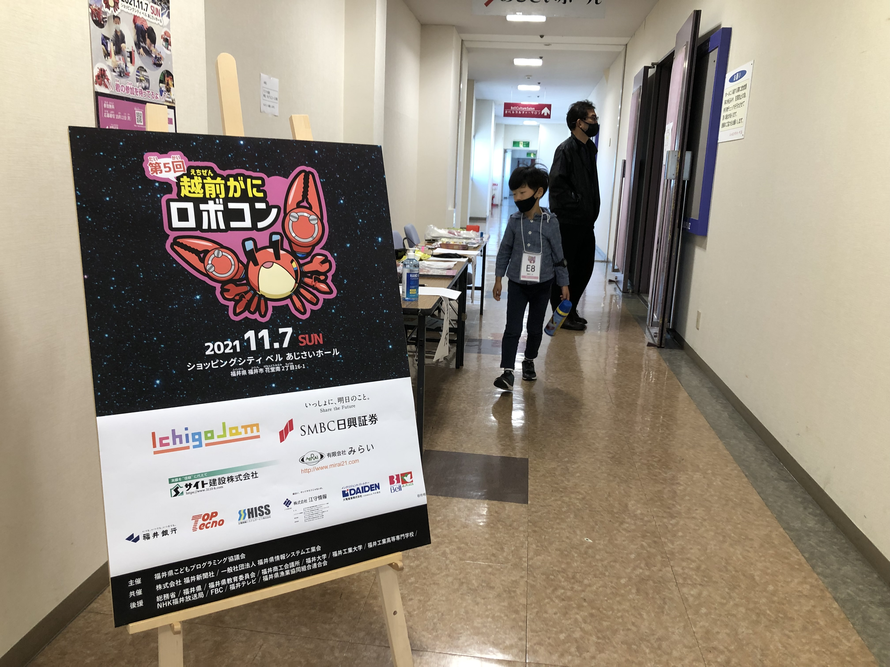

今年もみんなの参加ありがとう「第5回越前がにロボコン」！「かにロボ連盟 全国大会」は2年後、2023年！
第5回 越前がにロボコン！
前日の試走会から真剣なこども達、ドキドキの車検。
開会宣言は福野くん、誕生日おめでとう！
まずは予選、全員が左右1回ずつ挑戦の単独戦。
そして決勝進出チームの発表、今回は合計16チーム。
予算の都合で昨年は組めなかった本戦コースのトラス、やっぱりこれがいい。
リトライするかフィニッシュするか、本番の判断は超重要。


選手たちのこの表情！

そして表彰、今回初めて ズワイガニ の副賞が！
「魚は世界を救う 魚屋の食い処 まつ田」さん、(ズワイx1,セイコx5)x2のご提供ありがとうございます！
優勝＆越前がに、おめでとう！
デザイン賞は「Bumps3号 リカニちゃん」、今月第1回開催の魚津 紅ズワイガニロボコン から日本海電業 若林さん、突然のプレゼンターありがとうございます！

みなさん、今年も参加ありがとうございました！
昨年から司会＆配信で協力いただいている、福井高専 放送メディア研究会、めっちゃありがとう！
当日のLIVEアーカイブはこちら！

今回はいくつかのロボットを3Dでスキャン。
次回は全部のマシンをスキャンできるといいな！
落ちる光の来場カウンター、福野くんが会場で距離センサーを追加！
入場者カウント中！https://t.co/lZp9vKcjLJ pic.twitter.com/le0ndtlTbd
— Yuichi Ray Matta | 時を贈るおじさん (@yrm__) November 8, 2021
ボタンに加えて、前を通るだけでカウントするように現地アップデート、このIchigoJamの手軽さがいいね。
この日の来場カウントは「1819」人！
また、今回はネット投票によるデザイン賞、審査もリモートの時代！投票いただいたみなさま、ありがとうございました！
審査システムはこちらご自由にどうぞ！

実業団参加の「NPO法人 Bumps」さんもありがとうございました！
越前がにロボコンでは企業や組織による実業団参加を募集中、おそろいのユニフォームで大会に参加しよう！

今年も多くのスポンサーさまに支えられ無事開催することができました、ありがとうございました。
増えるカニロボ連盟、全国大会は 2023年！